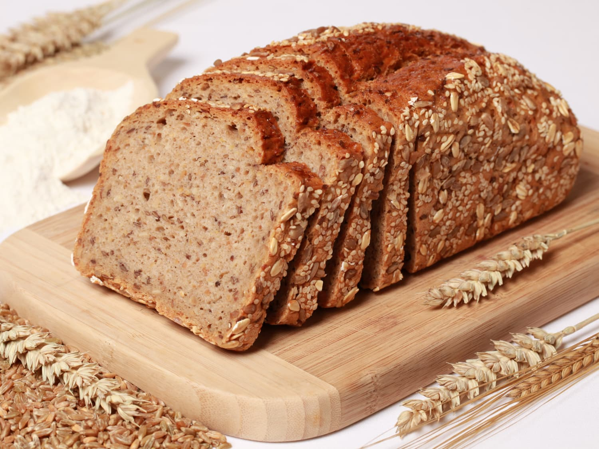

Whole Wheat Bread

Description:
Indulge in the wholesome delight of delicious whole wheat bread, a
culinary masterpiece that elevates the traditional bread experience to new
heights. With a warm golden crust that crackles delightfully upon each
bite, this bread boasts a soft, tender crumb that is a testament to the
art of baking. Made from the finest, freshly-milled whole wheat flour,
this loaf offers a rich, nutty flavor that is both comforting and
satisfying. The aroma that fills the air as it emerges from the oven is
irresistible, promising a delightful balance of hearty goodness and a
touch of natural sweetness. Whether enjoyed alone with a generous spread
of butter or used as a canvas for your favorite sandwiches, this whole
wheat bread is a nourishing and irresistible treat that will leave you
yearning for more.
Ingredients:
- 3 cups whole wheat flour
- 1 cup all-purpose flour
- 2 1/4 teaspoons active dry yeast (1 packet)
- 1 1/2 teaspoons salt
- 2 tablespoons honey or maple syrup
- 2 tablespoons olive oil or melted butter
- 1 1/4 cups warm water (around 110°F or 45°C)
- 1/4 cup rolled oats for topping
-
1/4 cup mixed seeds (such as sunflower seeds, flaxseeds, or sesame
seeds) for extra texture and flavor
Steps:
-
Proof the Yeast: In a small bowl, combine warm water and honey (or maple
syrup). Sprinkle the yeast over the water and let it sit for about 5-10
minutes, or until it becomes frothy.
-
Mix the Dry Ingredients: In a large mixing bowl, whisk together the
whole wheat flour, all-purpose flour, and salt until well combined.
-
Combine Wet and Dry Ingredients: Make a well in the center of the dry
ingredients and pour in the activated yeast mixture and olive oil (or
melted butter). Use a wooden spoon or a mixer with a dough hook to
combine the wet and dry ingredients until a dough starts to form.
-
Knead the Dough: Turn the dough out onto a floured surface and knead it
for about 10 minutes, or until the dough becomes smooth and elastic. If
using a mixer with a dough hook, knead on low speed for about 8-10
minutes.
-
First Rise: Place the kneaded dough in a lightly greased bowl, cover it
with a clean kitchen towel or plastic wrap, and let it rise in a warm,
draft-free area for 1 to 1.5 hours, or until it doubles in size.
-
Shape the Loaf: After the first rise, punch down the dough to release
the air. Shape it into a loaf by stretching the dough into an oval shape
and then rolling it up tightly. Pinch the seams to seal.
-
Second Rise: Place the shaped dough into a greased loaf pan and cover it
with a kitchen towel or plastic wrap. Let it rise for another 30-45
minutes, or until it rises just above the edges of the loaf pan.
- Preheat the Oven: Meanwhile, preheat your oven to 375°F (190°C).
-
Optional Toppings: If desired, brush the top of the risen loaf with
water and sprinkle rolled oats and mixed seeds on top for added texture
and flavor.
-
Bake the Bread: Place the loaf in the preheated oven and bake for about
30-35 minutes, or until the top is golden brown and the bread sounds
hollow when tapped on the bottom.
-
Cool and Enjoy: Remove the bread from the oven and let it cool in the
pan for a few minutes. Then, transfer it to a wire rack to cool
completely before slicing. Enjoy your delicious homemade whole wheat
bread with your favorite spreads or use it for sandwiches.